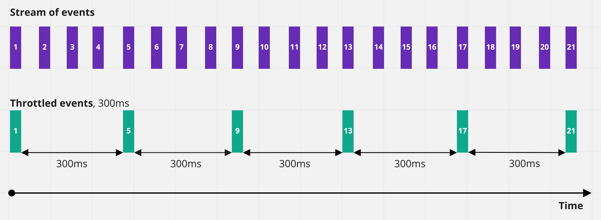
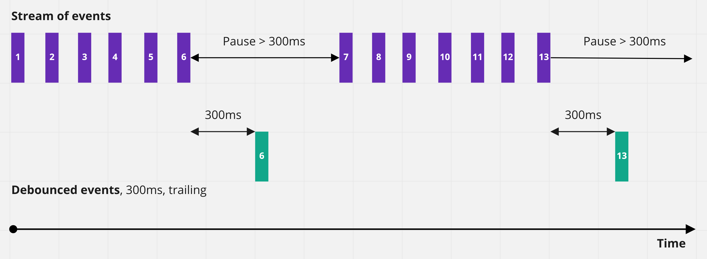
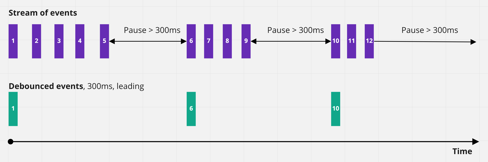

Throttle і Debounce
Досить часто необхідно обробити зміну розміру вікна, скрол, переміщення миші або текстове введення користувача. Це може бути сортування колекції і відображення результатів, анімація елемента, маніпуляції з DOM-деревом та інше. Все це покращує UX (user experience), але, на жаль, має велике навантаження на браузер, оскільки обробники подій спрацьовують надто часто. Такі події неофіційно називають «chatty events».
Наприклад, якщо додати слухача події до скролу, то під час прокручування сторінки мишкою можна викликати близько 30 подій на секунду. Повільне прокручування (свайп) у смартфоні може викликати до 100 подій на секунду. Якщо обробник події скролу виконує важкі обчислення та інші DOM-маніпуляції, гарантовано виникнуть проблеми з продуктивністю.
See the Pen lesson-14-scroll-event by goit-academy (@goit-academy) on CodePen.
Throttle і Debounce - це два схожих, але різних за поведінкою прийоми, що дозволяють контролювати кількість разів, яку ми дозволяємо виконувати функції з часом. Використовуємо їх реалізацію з бібліотеки Lodash.
Підключення бібліотеки
CDN (Content Delivery Network) - це географічно розподілена мережева інфраструктура, що забезпечує швидку доставку контенту користувачам веб-сервісів і сайтів. Сервери, що входять до складу CDN, географічно розташовуються таким чином, щоб зробити час відповіді для користувачів сайту/сервісу мінімальним.
Підключимо до проекту бібліотеку Lodash через CDN. Для цього використаємо сервіс cdnjs.com і додамо посилання на скрипт бібліотеки в кінці HTML-документа, як показано в прикладі.
index.html
<!DOCTYPE html>
<html lang="en">
<head>
<meta charset="UTF-8" />
<title>Document title</title>
</head>
<body>
<!-- HTML-markup -->
<!-- Lodash library script file -->
<script
async
src="https://cdnjs.cloudflare.com/ajax/libs/lodash.js/4.17.21/lodash.min.js"
integrity="sha512-WFN04846sdKMIP5LKNphMaWzU7YpMyCU245etK3g/2ARYbPK9Ub18eG+ljU96qKRCWh+quCY7yefSmlkQw1ANQ=="
crossorigin="anonymous"
referrerpolicy="no-referrer"
></script>
<!-- Your script file -->
<script defer src="path/to/script.js"></script>
</body>
</html>
Тепер ми можемо отримати доступ до бібліотеки у нашому скрипті. При підключенні бібліотек через CDN, до об'єкта window додається властивість, в якій зберігається те, що надає бібліотека. Ім'я цієї властивості унікальне для бібліотеки та описане в її документації. Для Lodash - це символ нижнього підкреслення _. Для перевірки використовуємо метод add, який просто додає два числа.
script.js
const result = _.add(2, 3); console.log(result); // 5
Throttle
Прийом throttle контролює кількість разів, яку функція може бути викликана протягом певного проміжку часу. Тобто дозволяє викликати функцію не частіше одного разу за N мілісекунд, гарантуючи її регулярне виконання.
Використовуючи throttle, ми не контролюємо, як часто браузер буде генерувати події. Ми всього-на-всього беремо контроль над частотою виконання функції обробника події.
document.addEventListener(
"scroll",
_.throttle(() => {
console.log("Scroll handler call every 300ms");
}, 300)
);
Реалізація з бібліотеки Lodash очікує першим аргументом функцію, яку необхідно «загальмувати», а другим - кількість мілісекунд. Повертає нову функцію для передачі в слухач події.
See the Pen lesson-14-throttle by goit-academy (@goit-academy) on CodePen.
Debounce
Прийом debounce гарантує, що функція буде викликана лише у тому разі, якщо між подіями буде пауза N мілісекунд. Наприклад, доки користувач скролить сторінку функція не буде викликана, але щойно він перестав скролити, функція буде викликана через 300 мілісекунд. Якщо скрол відновиться раніше, ніж через 300 мілісекунд після паузи, функція не буде викликана.
Використовуючи debounce, ми не управляємо тим, як часто браузер буде генерувати події, а всього лише беремо контроль над частотою виконання функції обробника події.
document.addEventListener(
"scroll",
_.debounce(() => {
console.log("Scroll handler call after 300ms pause");
}, 300)
);
Реалізація з бібліотеки Lodash очікує першим аргументом функцію, а другим - кількість мілісекунд. Повертає нову функцію для передачі в слухач події.
See the Pen lesson-14-debounce by goit-academy (@goit-academy) on CodePen.
Режими методу debounce
За замовчуванням метод debounce працює у режимі, коли функція викликається через N мілісекунд після паузи між потоками подій. Цей режим називається trailing edge (в кінці). Існують завдання, коли функцію потрібно викликати відразу під час настання першої події в потоці, а потім ігнорувати усі наступні події до паузи між ними, наприклад, - 300 мілісекунд. На старті наступного потоку подій ця поведінка повторюється. Такий режим називається leading edge (на початку).
Методу debounce бібліотеки Lodash можна передати необов'язковий третій аргумент - об'єкт параметрів, який містить дві властивості leading (за замовчуванням false) і trailing (за замовчуванням true). Ці налаштування змінюють режим і вказують, чи повинна функція запускатися на початку потоку подій або в кінці після паузи.
document.addEventListener(
"scroll",
_.debounce(
() => {
console.log("Scroll handler call on every event stream start");
},
300,
{
leading: true,
trailing: false,
}
)
);
На практиці режим leading може застосовуватись, наприклад, у разі, коли необхідно виконати функцію відправлення запиту на сервер при першому натисканні кнопки, після чого, ігнорувати всі наступні кліки до паузи. У прикладі реалізований debounce в обох режимах для події scroll.
See the Pen lesson-14-leading-debounce by goit-academy (@goit-academy) on CodePen.